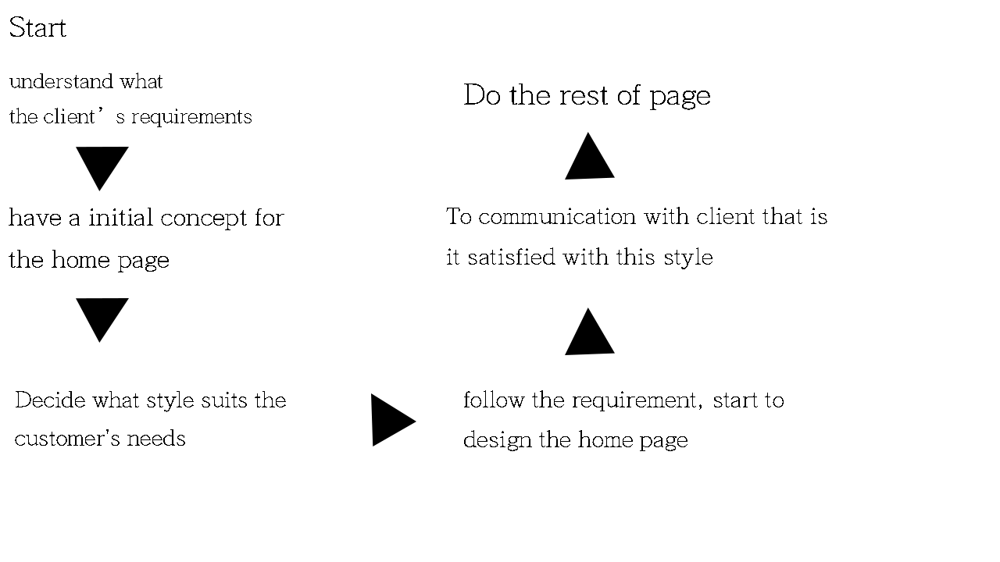

<HongZhe He jc812102)>
Summarise what the project is and why (purpose) in one or two concise
paragraphs. Note that the mission must be to improve something in a measurable way.
To "provide information about something" is not a good mission, since you can't see a measurable improvement. Why is the site needed?
The project is making a website for a company called "Training Zone" which is a kind of gym company. I will spread in several parts to make sure the home page not so crowding and beautiful. They are History, Staff, Article, and the home page. It should be some pic for the staff post on the Staff part.
Discuss the process(es) by which the site's success will be evaluated. Note that a "hit counter" only counts people (or robots) visiting your web site; it says nothing about whether the site has achieved its mission. How do you know that the site does what the client wanted? Measure the mission.
This is a pretty tough question. It is hard to know what the client wants, I should understand more about the requirements of clients and fix it again and again to close to the client's idea.
Describe the target audience your site is intended for (be specific; you can't aim for "everyone"), why they were chosen and how you will specifically design the site to cater to them.
This is a gym company to introduce how great their coachs are, so the audience should be two groups of people. One should be the fitness enthusiasts, the other is the normal people like who want to keep healthy or who need to move their body.
Insert image here (GIF or PNG are normally the best format choice if doing a plain, straight-lined diagram). Use arrows to show link direction. You might consider using draw.io if you don't have a preferred flowchart drawing program.
